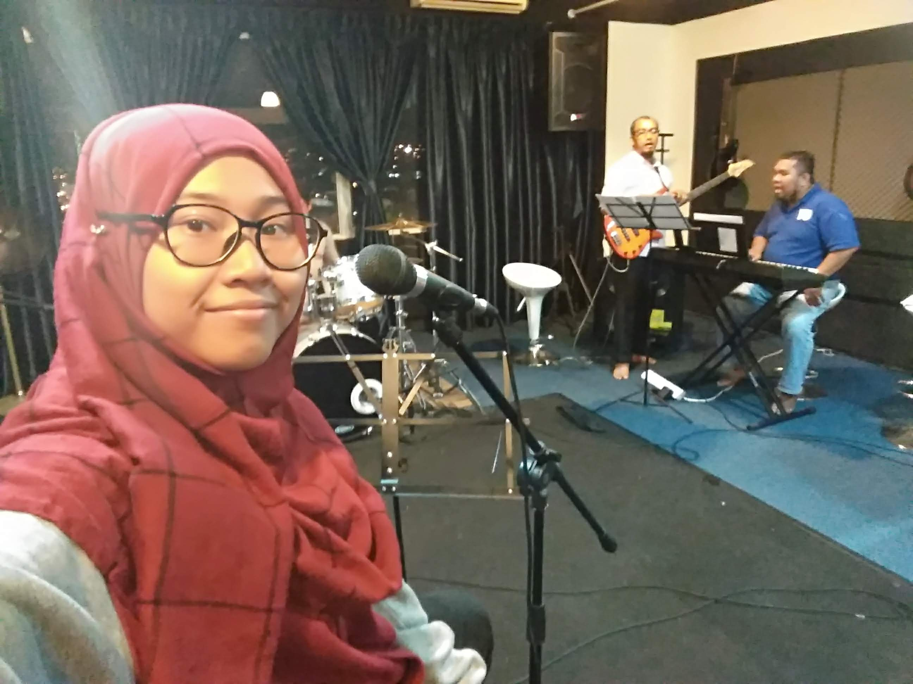
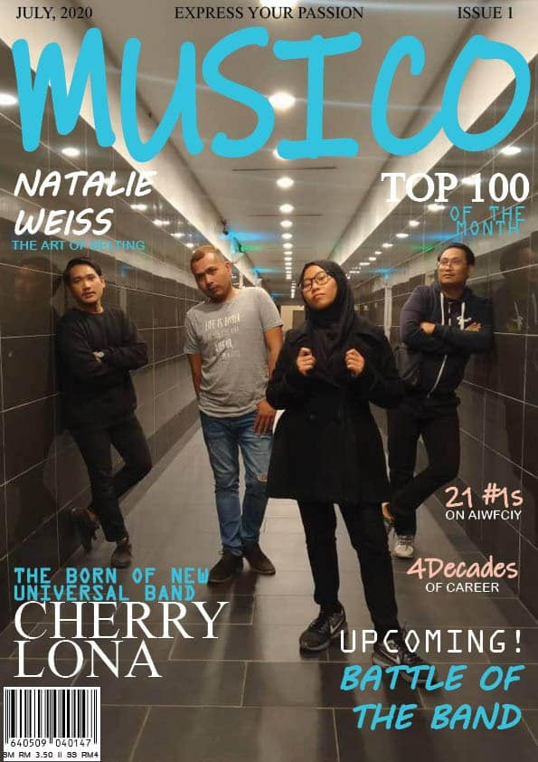

There was approximately 8songs in the making with 4songs already completed, 2 of them only left for the lyrics, and the rest still in chording
process. The Covid-19 had a major effect on their debut and songs producing as MCO restricted them from meeting up since home-studio was not
available.
"We are determine to proceed the long-awaited debut of us and we truly sorry for the supporters that you guys have been waiting
for the longest time to see us soar. We were stranded for the sake of MCO! and we won't dissapoint all of you", says the Cherry Lona Vocalist.

As for now, this is the songs the have in the pocket.
1. Rantai Jiwa
2. Impresi
3. Terbang
4. Silam
5. Disco Koperat(Gila)
6. Pesona
7. Skool
8. *N/A

With the list of songs they mind-blowingly produced within 3months, there is chance that the list will get longer for the next album!
Let's keep our support for the local band.
Sarah Sutho - Vocalist, Singer and Lyricist
Sarah Sutho was born in Hospital Bersalin Kuala Lmpur on 4th March 1999 by her lovely mother, Mubsirah Nayan.
Her father Ma'arof Mohd Nor initially was going to name her Daniel.
However the scanning was proved wrong it was her to be born which later quickly named Siti Maisarah by her late grandmother.
Sarah Sutho is her official stage name that simply came from her middle name Maisarah combined with 'Sutho'
which is her family name from her late great-grandfather.

.jpg)